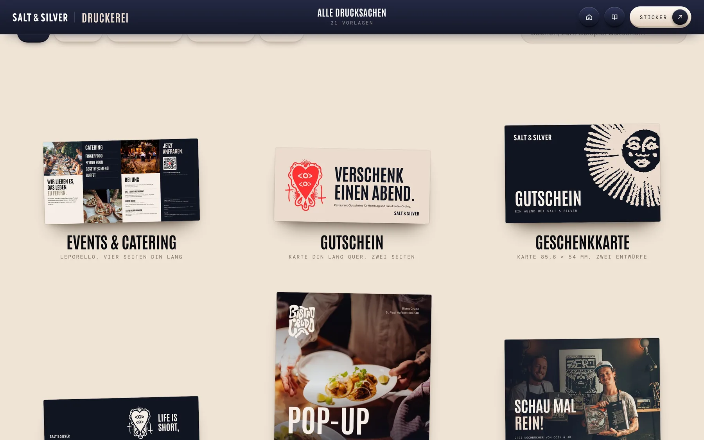
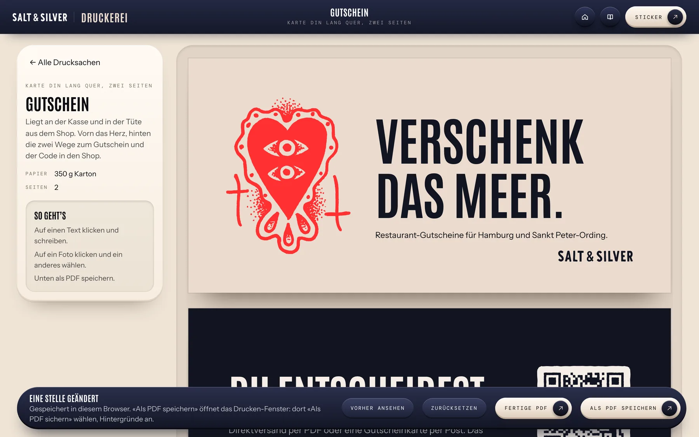
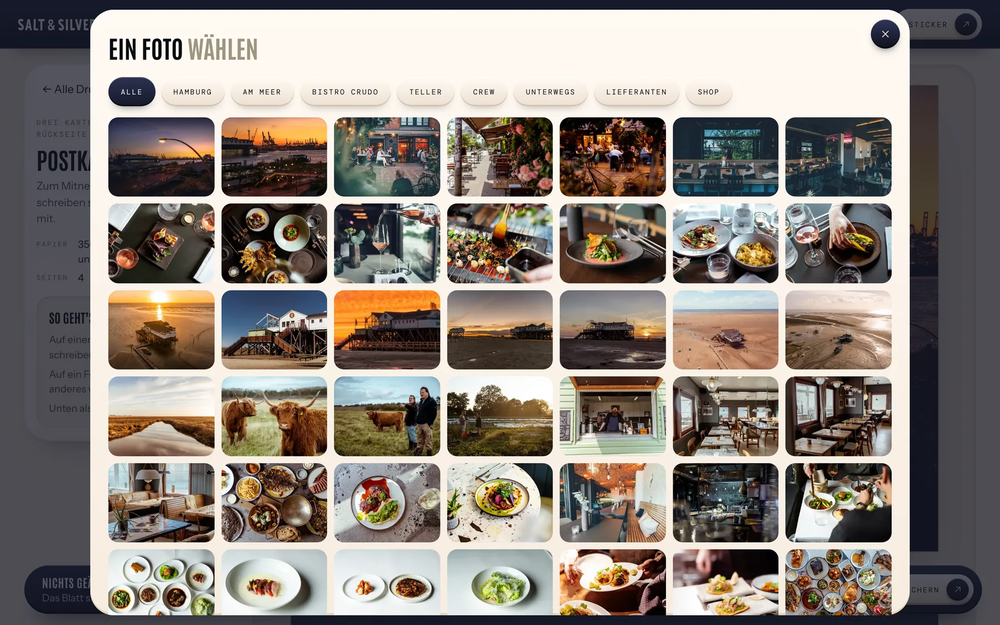

Druckerei
Ein Blatt aussuchen
Alle Vorlagen liegen als Blätter vor euch. Oben filtert ihr nach «Am Tisch», «Zum Verschenken», «Post und Büro» und «Aushang».
Ein Klick auf ein Blatt öffnet es zum Bearbeiten.

4 Kapitel
Gutschein, Postkarte oder Aushang in eurem Stil anpassen und als PDF speichern.

Alle Vorlagen liegen als Blätter vor euch. Oben filtert ihr nach «Am Tisch», «Zum Verschenken», «Post und Büro» und «Aushang».
Ein Klick auf ein Blatt öffnet es zum Bearbeiten.

Klickt auf dem Blatt auf einen Text. Er bekommt einen roten Rahmen, und ihr schreibt ihn neu.
Mit der Eingabetaste ist die Zeile fertig. Schrift, Größe und Farbe bleiben, wie sie sind.

Ein Klick auf ein Foto öffnet euer Bildarchiv. Wählt ein anderes, und es sitzt an derselben Stelle.
Oben im Fenster filtert ihr nach Bereich: Hamburg, Am Meer, Teller, Crew und so weiter.
Unten steht, wie viele Stellen ihr geändert habt. «Vorher ansehen» zeigt das Blatt, wie es angelegt wurde.
«Als PDF speichern» öffnet das Drucken-Fenster: «Als PDF sichern» wählen, Hintergründe an. Das Blatt hat ringsum drei Millimeter Beschnitt für die Druckerei.
«Fertige PDF» lädt die Vorlage, wie sie ohne eure Änderungen aussieht.
Eure Arbeiten bleiben im Browser des Rechners, an dem ihr sie anlegt. Die vierzig Sticker findet ihr über den Knopf «Sticker» oben rechts.